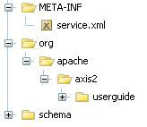
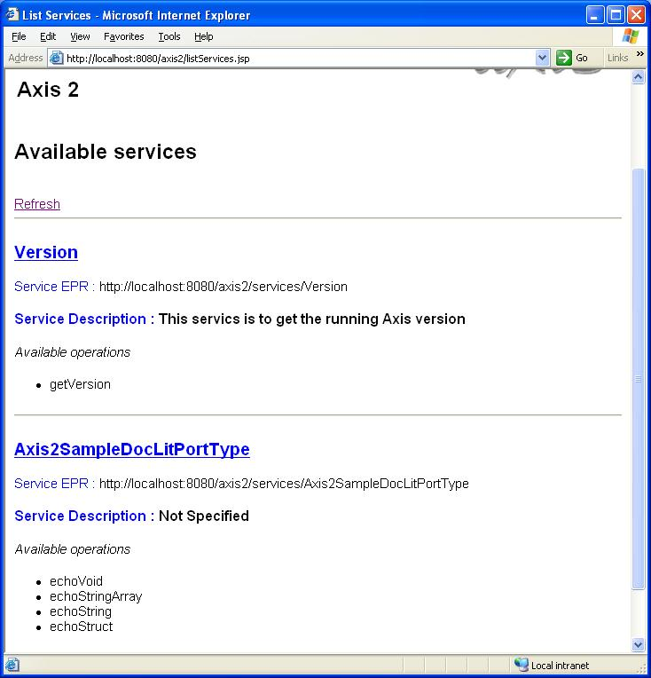
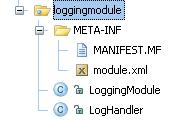

Version 0.94
User Feedback: axis-user@ws.apache.orgWelcome to Axis2, the next generation of Apache Axis!!! This User's Guide will help you to understand what Axis2 has to offer and how to get started with it. We hope you will benefit from the power of Axis2.
This User's Guide is written based on
Axis2 binary distribution. (The binary distribution can also be
created from the source distribution using the maven goal $maven
dist-bin)
If you are new to Axis, it's highly recommended that you read Axis 1.x User's Guide before you go any further in this guide.
Axis2 is the next generation of Apache Axis. In late August 2004, during the Axis2 Summit held in Colombo, Sri Lanka, a new architecture for Axis was introduced which was much more flexible, efficient and configurable. Although the architecture is new, some of the well established concepts from Axis 1.x like handlers are preserved in Axis2. Axis2 comes with many new features, enhancements and industry specification implementations.
After months of continued discussion and coding in this direction, Axis2 now delivers the following key features:
Speed- Axis2 uses its own object model and StAX (Streaming API for XML) parsing to achieve significantly greater speed than earlier versions of Apache Axis.
Low memory foot print- Axis2 was designed ground-up keeping low memory foot print in mind.
AXIOM- Axis2 comes with its own light-weight object model, AXIOM, for message processing which is extensible, high performance and developer convenient
Hot Deployment- Axis2 is equipped with the capability of deploying web service & handlers while system is up and running. In other words, new services can be added to the system without having to shut down server.Drop the required Web service archive into the services directory in the repository and deployment model will automatically deploy the service and make it available for use.
Asynchronous Web Services- Axis2 now supports asynchronous web services & asynchronous web services invocation using non-blocking clients and transports .
MEP Support- Axis2 now comes handy with the flexibility to support Message Exchange Patterns (MEPs) with in-built support for basic MEPs defined in WSDL 2.0.
Flexibility- The Axis2 architecture gives the developer complete freedom to insert extensions into the engine for custom header processing, system management, or anything else you can imagine.
Stability- Axis2 defines a set of published interfaces which change relatively slowly compared to the rest of Axis.
Component-oriented Deployment- You can easily define reusable networks of Handlers to implement common patterns of processing for your applications, or to distribute to partners.
Transport Framework- We have a clean and simple abstraction for integrating and using Transports (i.e., senders and listeners for SOAP over various protocols such as SMTP, FTP, message-oriented middleware, etc), and the core of the engine is completely transport-independent.
WSDL support- Axis2 supports the Web Service Description Language, version 1.1 and 2.0, which allows you to easily build stubs to access remote services, and also to automatically export machine-readable descriptions of your deployed services from Axis2.
Add-ons – Several web services have been incorporated including WSS4J for security, Sandesha for reliable messaging, Kandula which is an encapsulation of WS- coordination, Atomic Transaction and Business Activity.
Composition and Extensibility - modules and phases improve support for composability and extensibility. Modules supports composability and is able to add support for new WS-* specifications in a simple and clean manner. They are however not hot deployable as they change the overall behavior of the system.
We hope you enjoy using Axis2. Please note that this is an open-source effort. If you feel the code could use some new features or fixes, please get involved and lend a hand! The Axis developer community welcomes your participation.
Let us know what you think!
Please send your feedback on Axis2 to "axis-user@ws.apache.org" and make sure to prefix the subject of the mail with [Axis2].
Support for One-Way Messaging (In-Only) and Request Response Messaging (In-Out)
Module Architecture, mechanism to extend the SOAP Processing Model
Content hierarchy
Archive based deployment Model
WSDL Code Generation Tool for Stub and skeletons
WS-Addressing, both the submission (2004/08) and final (2005/08) versions
WSS4J module for security
Improved and user friendly Client API
WSDL2Java and Java2WSDL
REST Web Service Support
Transports supports: HTTP, SMTP, TCP, JMS
Raw XML providers
Support for MTOM/ MIME/ SwA
SAAJ implementation
DOOM new
Wrap/Unwrap capability for the generated code new
Web Service Policy Support
WSDL2WS- eclipse Plugin/ Command line version/ Intellij IDEA Plugin
Service Archive Wizard- eclipse Plugin/ Intellij IDEA Plugin
Module Archive Wizard- eclipse Plugin
See list of what we think needs to be done, and consider helping out if you're interested & able!
JAX-RPC 1.1 and/or JAX-WS compliance
SOAP Encoding
Binary serialization and de-serialization support
Management Interface for Axis2
Implementation of other Transports.
Resource framework implementation (WS-RF) and Enterprise web services such as JSR 109 support
Interop tests
In the following sections of the user's guide we will look at how to write and deploy Web Services and how to write Web Service Clients using Axis2. All the user's guide samples are located at the "samples/userguide/src" directory of the binary distribution. So... let's explore the samples.
Before starting, please check whether you have deployed the "axis2.war" in your servlet container and it is working properly. (See Installation Guide). User can select any of the following two ways of writing web services using Axis2.
Start from the WSDL ->Code generate the Skeleton ->Implement the Business Logic.
First let's see how we can write a simple Web Service (MyService) using Axis2's primary interfaces and deploy it. For this purpose we will create a Web Service with two operations as follows.
public void ping(OMElement element){} //IN-ONLY operation, just accepts the OMElement and do some processing.
public OMElement echo(OMElement element){}//IN-OUT operation, accepts an OMElement and
//responds with another OMElement after processing.
Complete code for this example Web Service (MyService) can be found in the "Axis2Home/samples/userguide/src" directory under "userguide/example1" package. As you can see, the two operations are very simple and need no explanations on what they do. Now let's see how we can write the deployment descriptors for the service and deploy it.
Write the Implementation Class
Write a services.xml file to explain the Web Service
create a *.aar archive (Axis Archive) for the Web Service
Deploy the Web Service
Provides a implementation class that provide the business logic for the Web Service, it should have methods that match the operations in the Web Service. Unless you have data binding the signature of the methods can have one parameter of type OMElement.
public class MyService{
public void ping(OMElement element){
......
}
public OMElement echo(OMElement element){
......
}
}
Axis2 uses "services.xml" to keep configurations for a Web Service. Each Web Service deployed in Axis2 needs a "services.xml" containing the configurations. "services.xml" for MyService will be as follows.
<service >
<description>
This is a sample Web Service with two operations, echo and ping.
</description>
<parameter name="ServiceClass" locked="false">userguide.example1.MyService</parameter>
<operation name="echo">
<messageReceiver class="org.apache.axis2.receivers.RawXMLINOutMessageReceiver"/>
</operation>
<operation name="ping">
<messageReceiver class="org.apache.axis2.receivers.RawXMLINOnlyMessageReceiver"/>
</operation>
</service>
The above XML tags can be explained as follows:
Name of the service will be the name of the archive file , if and only if the services.xml contains only one service element.
Next comes the description and the service class.
The next two xml tags describe the operations that are available in this service with respective message receivers. For the "echo" operation we have used a RawXMLINOutMessageReceiver since it is an IN-OUT operation. For IN-ONLY operation "ping", we have used RawXMLINOnlyMessageReceiver as the message receiver.
You can write a services.xml file to include a group of services instead of a single service. This makes management and deployment of a set of related services very easy. At runtime you can share information between these services within a single interaction using the ServiceGroupContext. If you hope to use this functionality, the services.xml file should have following format.
<serviceGroup>
<service name="Service1">
<!-- details for Service1 -->
</service>
<service name="Service2">
<!-- details for Service2 -->
</service>
<module ref="ModuleName" />
<parameter name="serviceGroupParam1" locked="false">value 1</parameter>
</serviceGroup>
Note : name of the service is a compulsory attribute
Axis2 use ".aar" (Axis Archive) file as the deployment package for Web Services. Therefore, for MyService we will use "MyService.aar" with the "services.xml" packaged in the META-INF as shown in the following picture.
To create "MyService.aar" user can first create a jar file containing all the files necessary for the service and then rename the "jar" to "aar" so that Axis2 understands it as a service archive. This has already been created in the "Axis2Home/samples/userguide" directory. Now let's use it...
Deploying the service is just a matter of dropping the ".aar" in to "services" directory that can be found in the "\webapps\axis2\WEB-INF" of your servlet container, hence copy the "MyService.aar" into the "services" directory. Once these steps are completed, start the servlet container (if you have not already started) and check the link "Services" on the Home Page of Axis2 Web Application (http://localhost:8080/axis2/index.jsp) and see whether the MyService is deployed properly. If you can see the following output then you have successfully deployed MyService on Axis2.

Note: Axis2 provides an easy way to deploy Web Services using the "Upload Service" tool on Axis2 Web Application's Administration module. (See the Web Administration Guide for more information on this)
This is the second method of writing Web Services using Axis2. Let's see how we can generate the skeleton from a given WSDL and implement the business logic using Axis2. For this we use Axis2SampleDocLit.wsdl that can be found in the wsdl directory under samples.
To generate the skeleton and the required classes you can use the WSDL2Java tool provided in Axis2. This tool is located in the bin directory of the distribution and can be executed using the provided scripts (.bat or .sh). The tool's parameter list is as follows and user can specify these values depending on their requirements.
Usage WSDL2Code -uri :WSDL file location -o : output file location -a : Generate async style code only. Default if off -s : Generate sync style code only. Default if off. takes precedence over -a -p : set custom package name -l : valid languages are java and csharp. Default is java -t : Generate TestCase to test the generated code -ss : Generate server side code (i.e. skeletons).Default is off -sd : Generate service descriptor (i.e. axis2.xml).Default is off.Valid with -ss
We will use the tool with the following parameters and generate the skeleton and the other required classes.
Windows users can use the following command in the console:
WSDL2Java -uri ..\samples\wsdl\Axis2SampleDocLit.wsdl -ss -sd -o ..\samples\src -p org.apache.axis2.userguide
Linux users should switch the file separator:
WSDL2Java -uri ../samples/wsdl/Axis2SampleDocLit.wsdl -ss -sd -o ../samples/src -p org.apache.axis2.userguide
This will generate the required classes in the src directory inside samples, and the schema classes in schema directory also inside samples. Note that these are not source files and should be availed in the class path in order to compile the generated classes
Locate the skeleton class that can be found under src/userguide directory with the name "Axis2SampleDocLitPortTypeSkeleton.java". This is the skeleton for our web service and we can now easily implement the business logic. The WSDL we have used has three operations:
echoString - Operation that echoes a String value
echoStringArray - Operation that accept string array as the input and echoes them back
echoStruct - Operation that accept a Struct as the input and echoes them back.
Locate the following code segment in the "Axis2SampleDocLitPortTypeSkeleton.java" and fill the business logic as shown below.
public org.soapinterop.xsd.EchoStringArrayReturnDocument
echoStringArray(org.soapinterop.xsd.EchoStringArrayParamDocument param2){
//To do fill this with the necessary business logic
return null;
}
Once filled with the business logic it will be as follows. The code is simple and the explanations are given as comments.
public org.soapinterop.xsd.EchoStringReturnDocument
echoString(org.soapinterop.xsd.EchoStringParamDocument param6) {
//Use the factory to create the output document.
EchoStringReturnDocument retDoc = EchoStringReturnDocument.Factory.newInstance();
//send the string back.
retDoc.setEchoStringReturn(param6.getEchoStringParam());
return retDoc;
}
Similarly following code fragments shows how you can fill the business logic for our first web service.
public org.soapinterop.xsd.EchoStringArrayReturnDocument
echoStringArray(org.soapinterop.xsd.EchoStringArrayParamDocument param2) {
//Use the factory to create the output document.
EchoStringArrayReturnDocument retDoc = EchoStringArrayReturnDocument.Factory.newInstance();
//Get the String array from the input parameters.
String[] inParams = param2.getEchoStringArrayParam().getStringArray();
ArrayOfstringLiteral retParams = ArrayOfstringLiteral.Factory.newInstance();
//Set the input parameters to the output parameters for echoing.
for (int i = 0; i < inParams.length; i++) {
retParams.addString(inParams[i]);
}
//return the output document.
retDoc.setEchoStringArrayReturn(retParams);
return retDoc;
}
public org.soapinterop.xsd.EchoStructReturnDocument
echoStruct(org.soapinterop.xsd.EchoStructParamDocument param4) {
//Use the factory to create the output document.
EchoStructReturnDocument retDoc = EchoStructReturnDocument.Factory.newInstance();
//Get the SOAPStrcut from the incoming parameters
SOAPStruct inStruct = param4.getEchoStructParam();
//Struct for the sending back
SOAPStruct outStruct = SOAPStruct.Factory.newInstance();
//Fill the outgoing struct
outStruct.setVarFloat(inStruct.getVarFloat());
outStruct.setVarInt(inStruct.getVarInt());
outStruct.setVarString(inStruct.getVarString());
//Set the outgoing document.
retDoc.setEchoStructReturn(outStruct);
return retDoc;
}
Axis2 uses "services.xml" to hold the configurations for a particular web service deployed in the Axis2 engine. When we generate the skeleton using the WSDL2Java tool, it will also generate the required services.xml for this web service as well. This can be found in the same directory as the skeleton. The generated services.xml is as follows.
<!--Auto generated Axis Service XML-->
<service name="Axis2SampleDocLitPortTypeSkeletonTest">
<parameter locked="xsd:false" name="ServiceClass">userguide.Axis2SampleDocLitPortTypeSkeleton</parameter>
<!--Mounting the method echoStringArray-->
<operation name="echoStringArray">
<messageReceiver class="userguide.Axis2SampleDocLitPortTypeMessageReceiver"/>
</operation>
<!--Mounting the method echoStruct-->
<operation name="echoStruct">
<messageReceiver class="userguide.Axis2SampleDocLitPortTypeMessageReceiver"/>
</operation>
<!--Mounting the method echoString-->
<operation name="echoString">
<messageReceiver class="userguide.Axis2SampleDocLitPortTypeMessageReceiver"/>
</operation>
</service>
First line of the "services.xml" gives the name of the Web Service. This is used in the URL to the service as the service name. Next comes the description and the service class. The next xml tags describe the operations that are available in this service with respective message receivers.
Next step in the process is to package the classes in a .aar (axis2 archive) and deploy it in Axis2. When the WSDL2Java tool generate the skeleton it will also generate the required data binding classes. These schema related classes are located in the schema directory of the generated code. Copy this to your class path, compile the skeleton and the supporting classes. In order to create the .aar file, let's create the following directory structure with the required files and then simply use jar command to package it.

Go to the top level directory where you can find the class files for the above service (i.e. one level up on the directory structure shown above), then type the following command in a command line.
jar -cf Axis2SampleDocLitPortType.aar .
Deploying the service is just a matter of dropping the ".aar" in to "services" directory that can be found in the "\webapps\axis2\WEB-INF" of your servlet container, hence copy the "echo.aar" into the "services" directory. Once these steps are completed, please start the servlet container (if you have not already started) and check the link "Services" on the Home Page of Axis2 Web Application (http://localhost:8080/axis2/index.jsp) and see whether the Axis2SampleDocLitPortType is deployed properly. If you can see the following output then you have successfully deployed Axis2SampleDocLitPortType on Axis2.

Note: Axis2 provides an easy way to deploy Web Services using the "Upload Service" tool on Axis2 Web Application's Administration module. (See the Web Administration Guide for more information on this)
Now let's see how we can write a Web Service Client to use this Web Service.
Web services can be used to provide wide range of functionality to the users ranging from simple, less time consuming operations such as "getStockQuote" to time consuming business services. When we utilize (invoke using client applications) these Web Service we cannot use some simple generic invocation paradigm that suites all the timing complexities involved in the service operations. For example, if we use a single transport channel (such as HTTP) to invoke a Web Service with and IN-OUT operation that take long time to complete, then most of the time we may end up with "connection time outs". On the other hand, if there are simultaneous service invocations that we need to perform from a single client application, then the use of a "blocking" client API will degrade the performance of the client application. Similarly there are various other consequences such as One-Way transports that come in to play when we need them. Let's try to analyze some common service invocation paradigms.
Many web service engines provide the users with a Blocking and Non-Blocking client APIs.
Blocking API -Once the service invocation is called, the client application hangs and only gets control back when the operation completes, after which client receives a response or a fault. This is the simplest way of invoking Web Services and it also suites many business situations.
Non-Blocking API - This is a callback or polling based API, hence once a service invocation is called, the client application immediately gets the control back and the response is retrieved using the callback object provided. This approach provides the flexibility to the client application to invoke several Web Services simultaneously without blocking the operation already invoked.
Both these mechanisms work in the API level. Let's name the asynchronous behavior that we can get using the Non-Blocking API as API Level Asynchrony.
Both these mechanisms use single transport connection to send the request and to receive the response. They severely lags the capability of using two transport connections for the request and the response (either One-Way of Two-Way). So both these mechanisms fail to address the problem of long running transactions (the transport connection may time-out before the operation completes). A possible solution would be to use two separate transport connections for request and response. The asynchronous behavior that we gain using this solution can be called Transport Level Asynchrony.
By combining API Level Asynchrony & Transport Level Asynchrony we can obtain four different invocation patterns for web services as shown in the following table.
API (Blocking/Non-Blocking) |
Dual Transports (Yes/No) |
Description |
Blocking |
No |
Simplest and the familiar invocation pattern |
Non-Blocking |
No |
Using callbacks or polling |
Blocking |
Yes |
This is useful when the service operation is IN-OUT in nature but the transport used is One-Way (e.g. SMTP) |
Non-Blocking |
Yes |
This is can be used to gain the maximum asynchronous behavior. No blocking in the API level and also in the transport level |
Axis2 provides the user with all these possibilities to invoke Web Services.
Below we describe how to write Web Services Clients using Axis2. This can be done in two methods:
Using stubs generated with data binding support, making the life easy for developers writing Web Service client applications
Axis2 provides the user with several invocation patterns for Web Services, ranging from pure blocking single channel invocations to a non-blocking dual channel invocations. Let's first see how we can write a client to invoke "echo" operation of "MyService" using the simplest blocking invocation. The client code you need to write is as follows.
try {
OMElement payload = ClientUtil.getEchoOMElement();
Options options = new Options();
options.setTo(targetEPR);
options.setListenerTransportProtocol(Constants.TRANSPORT_HTTP);
options.setUseSeparateListener(false);
ServiceClient serviceClient = new ServiceClient();
serviceClient.setOptions(options);
OMElement result = sender.sendReceive(payload);
StringWriter writer = new StringWriter();
result.serializeWithCache(new OMOutput(XMLOutputFactory.newInstance().createXMLStreamWriter(writer)));
writer.flush();
System.out.println(writer.toString());
} catch (AxisFault axisFault) {
axisFault.printStackTrace();
} catch (XMLStreamException e) {
e.printStackTrace();
}
}
The green lines shows the set of operations that you need to perform inorder to invoke a web service. The rest is used to create the OMElement that needs to be sent and display the response OMElement. To test this client, use the provided ant build file that can be found in the "Axis2Home/samples" directory. Run the "testEchoBlockingClient" target . If you can see the response OMElement printed in your command line, then you have successfully tested the client.
In the Web Service "MyService" we had a IN-ONLY operation with the name "ping" (see Web Services Using Axis2). Let's write a client to invoke this operation. The client code is as follows:
try {
OMElement payload = ClientUtil.getPingOMElement();
Options options = new Options();
options.setTo(targetEPR);
ServiceClient serviceClient = new ServiceClient();
serviceClient.setOptions(options);
serviceClient.fireAndForget(payload);
}
catch (AxisFault axisFault) {
axisFault.printStackTrace();
}
Since we are accessing a IN-ONLY operation we can directly use the "fireAndForget()" in ServiceClient to invoke this operation , and that will not block the invocation, hence it will return the control immediately back to the client. You can test this client by running the target "testPingClient" of the ant build file at "Axis2Home/samples".
We have invoked the two operations in our service. Are we done? No! There are lot more to explore. Let's see some other ways to invoke the same operations...
In the EchoBlockingClient once the "serviceCleint.sendReceive(payload);" is called, the client is blocked till the operation is completed. This behavior is not desirable when there are many Web Service invocations to be done in a single client application. A solution would be to use a Non-Blocking API to invoke web services. Axis2 provides a callback based non-blocking API for users.
A sample client for this can be found under "Axis2Home/samples/userguide/src/userguide/clients" with the name EchoNonBlockingClient. If we consider the changes that user may have to do with respect to the "EchoBlockingClient" that we have already seen, it will be as follows:
serviceClient.sendReceiveNonblocking(payload, callback);
The invocation accepts a callback object as a parameter. Axis2 client API provides an abstract Callback with the following methods:
public abstract void onComplete(AsyncResult result);
public abstract void reportError(Exception e);
public boolean isComplete() {}
The user is expected to implement the "onComplete " and "reportError " methods of their extended call back class. Axis2 engine calls the onComplete method once the Web Service response is received by the Axis2 Client API (ServiceClient). This will eliminate the blocking nature of the Web Service invocations and provides the user with the flexibility to use Non Blocking API for Web Service Clients.
To run the sample client ( EchoNonBlockingClient) you can simply use the "testEchoNonBlockingClient" target of the ant file found at the "Axis2Home/samples" directory.
The solution provided by the Non-Blocking API has one limitation when it comes to Web Service invocations which takes long time to complete. The limitation is due to the use of single transport connection to invoke the Web Service and to retrieve the response. In other words, client API provides a non blocking invocation mechanism for the users, but the request and the response comes in a single transport (Two-Way transport) connection (like HTTP). Long running Web Service invocations or Web Service invocations using One-Way transports (like SMTP) cannot be utilized by simply using a non blocking invocation.
The trivial solution is to use separate transport connections (either One-Way or Two-Way) for the request and response. The next problem that needs to be solved is the correlation (correlating the request and the response). WS-Addressing provides a neat solution to this using <wsa:MessageID> and <wsa:RelatesTo> headers. Axis2 provides support for addressing based correlation mechanism and a complying Client API to invoke Web Services with two transport connections. (Core of Axis2 does not depend on WS-Addressing, but contains a set of parameters like in addressing that can be populated in any means. WS-Addressing is one of the users that may populate them. Even the transports can populate these. Hence Axis2 has the flexibility to use different versions of addressing)
Users can select between Blocking or Non-Blocking APIs for the Web Service clients with two transport connections. By simply using a boolean flag, the same API can be used to invoke web services (IN-OUT operations) using two separate transport connections. Let's see how it's done using an example. Following code fragment shows how to invoke the same "echo" operation using Non-Blocking API with two transport connections. The ultimate asynchrony!!
try {
OMElement payload = ClientUtil.getEchoOMElement();
Options options = new Options();
options.setTo(targetEPR);
options.setListenerTransportProtocol(Constants.TRANSPORT_HTTP);
//The boolean flag informs the axis2 engine to use two separate transport connection
//to retrieve the response.
options.setUseSeparateListener(true);
ServiceClient serviceClinet = new ServiceClinet();
serviceClinet.setOptions(options);
//Callback to handle the response
Callback callback = new Callback() {
public void onComplete(AsyncResult result) {
try {
StringWriter writer = new StringWriter();
result.serializeWithCache(new OMOutput(XMLOutputFactory.newInstance()
.createXMLStreamWriter(writer)));
writer.flush();
System.out.println(writer.toString());
} catch (XMLStreamException e) {
reportError(e);
}
}
public void reportError(Exception e) {
e.printStackTrace();
}
};
//Non-Blocking Invocation
serviceClinet.sendReceiveNonblocking(payload, callback);
//Wait till the callback receives the response.
while (!callback.isComplete()) {
Thread.sleep(1000);
}
serviceClinet.finalizeInvoke();
} catch (AxisFault axisFault) {
axisFault.printStackTrace();
} catch (Exception ex) {
ex.printStackTrace();
}
The boolean flag (value true) in the "options.setUseSeparateListener(...)" method informs the Axis2 engine to use separate transport connections for request and response. Finally "serviceClinet.finalizeInvoke()" informs the Axis2 engine to stop the client side listener started to retrieve the response.
Before we run the sample client we have one more step to perform. As mentioned earlier Axis2 uses addressing based correlation mechanism, hence we need to "engage" addressing module in the server side as well. According to the Axis2 architecture, addressing module is deployed in the "pre-dispatch" phase (See Architecture Guide for more details about phases) and hence "engaging" means simply adding module reference in the "axis2.xml" (NOT the "services.xml"). Now add the following line to the "axis2.xml" that you can find in the "/webapps/axis2/WEB-INF" directory in the servlet container.
<module ref="addressing"/>
Note: Once you change the "axis2.xml" you need to restart the servlet container.
This will enable the addressing in the server side. Now you can test the "TestEchoNonBlockingDualClient" using the "testEchoNonBlockingDualClient" target of the ant file found at "Axis2Home/samples" directory. If you see the response OMElement printed in the client side, then you have successfully tested the Non Blocking API with two transport channels at the client side.
This is again a Two-Way transport request/response client, but this time, we use a Blocking API in the client code. Sample code for this can be found in the "Axis2Home/samples/userguide/src/userguide/clients/" directory and the explanation is similar to the EchoNonBlockingDualClient, except that here we do not use a callback object to handle response. This is a very useful mechanism when the service invocation is IN-OUT in nature and the transports are One-Way (e.g. SMTP). For the sample client we use two HTTP connections for request and response. User can test this client using the "echoBlockingDualClient" target of the ant build file found in the "Axis2Home/samples" directory.
See Configuring Transports for use different transports.
Axis2 provides the data binding support for Web Service client as well. The user can generate the required stubs from a given WSDL with the other supporting classes. Let's generate stubs for the WSDL used earlier to generate the skeleton for the "Axis2SampleDocLitPortType". Simply run the WSDL2Java tool that can be found in the bin directory of the Axis2 distribution using the following command:
WSDL2Java -uri ..\samples\wsdl\Axis2SampleDocLit.wsdl -o ..\samples\src -p org.apache.axis2.userguide
This will generate the required stub "Axis2SampleDocLitPortTypeStub.java" that can be used to invoke the Web Service Axis2SampleDocLitPortType. Let's see how we can use this stub to write Web Service clients to utilize the Web Service Axis2SampleDocLitPortType (the service that we have already deployed).
Following code fragment shows the necessary code for utilizing the echoVoid operation of the Axis2SampleDocLitPortType that we have already deployed. In this operation, a blank SOAP body element is sent to the Web Service and the same SOAP envelope is echoed back.
try {
//Create the stub by passing the AXIS_HOME and target EPR.
//We pass null to the AXIS_HOME and hence the stub will use the current directory as the AXIS_HOME
Axis2SampleDocLitPortTypeStub stub = new Axis2SampleDocLitPortTypeStub(null,
"http://localhost:8080/axis2/services/Axis2SampleDocLitPortType");
stub.echoVoid();
} catch (Exception e) {
e.printStackTrace();
}
Following code fragment shows the necessary code for utilizing the echoString operation of the Axis2SampleDocLitPortType that we have already deployed. The code is very simple to understand and the explanations are in the form of comments.
try {
//Create the stub by passing the AXIS_HOME and target EPR.
//We pass null to the AXIS_HOME and hence the stub will use the current directory as the AXIS_HOME
Axis2SampleDocLitPortTypeStub stub= new Axis2SampleDocLitPortTypeStub(null,
"http://localhost:8080/axis2/services/Axis2SampleDocLitPortType");
//Create the request document to be sent.
EchoStringParamDocument reqDoc= EchoStringParamDocument.Factory.newInstance();
reqDoc.setEchoStringParam("Axis2 Echo");
//invokes the web service.
EchoStringReturnDocument resDoc=stub.echoString(reqDoc);
System.out.println(resDoc.getEchoStringReturn());
} catch (Exception e) {
e.printStackTrace();
}
Similarly following code fragments show client side code for echoStringArray operation and echoStruct operation respectively.
try {
//Create the stub by passing the AXIS_HOME and target EPR.
//We pass null to the AXIS_HOME and hence the stub will use the current directory as the AXIS_HOME
Axis2SampleDocLitPortTypeStub stub = new Axis2SampleDocLitPortTypeStub(null,
"http://localhost:8080/axis2/services/Axis2SampleDocLitPortType");
//Create the request document to be sent.
EchoStringArrayParamDocument reqDoc = EchoStringArrayParamDocument.Factory.newInstance();
ArrayOfstringLiteral paramArray = ArrayOfstringLiteral.Factory.newInstance();
paramArray.addString("Axis2");
paramArray.addString("Echo");
reqDoc.setEchoStringArrayParam(paramArray);
EchoStringArrayReturnDocument resDoc = stub.echoStringArray(reqDoc);
//Get the response params
String[] resParams = resDoc.getEchoStringArrayReturn().getStringArray();
for (int i = 0; i < resParams.length; i++) {
System.out.println(resParams[i]);
}
} catch (Exception e) {
e.printStackTrace();
}
try {
//Create the stub by passing the AXIS_HOME and target EPR.
//We pass null to the AXIS_HOME and hence the stub will use the current directory as the AXIS_HOME
Axis2SampleDocLitPortTypeStub stub = new Axis2SampleDocLitPortTypeStub(null,
"http://localhost:8080/axis2/services/Axis2SampleDocLitPortType");
//Create the request Document
EchoStructParamDocument reqDoc = EchoStructParamDocument.Factory.newInstance();
//Create the complex type
SOAPStruct reqStruct = SOAPStruct.Factory.newInstance();
reqStruct.setVarFloat(100.50F);
reqStruct.setVarInt(10);
reqStruct.setVarString("High");
reqDoc.setEchoStructParam(reqStruct);
//Service invocation
EchoStructReturnDocument resDoc = stub.echoStruct(reqDoc);
SOAPStruct resStruct = resDoc.getEchoStructReturn();
System.out.println("floot Value :" + resStruct.getVarFloat());
System.out.println("int Value :" + resStruct.getVarInt());
System.out.println("String Value :" + resStruct.getVarString());
} catch (Exception e) {
e.printStackTrace();
}
Axis2 provides an extended support for modules (See Architecture Guide for more details about modules in Axis2). Let's create a custom module and deploy it to the MyService which we created earlier. Following steps shows the actions that need to be performed to deploy a custom module for a given Web Service:
Create the Module Implementation
Create the Handlers
Create the module.xml
Modify the "axis2.xml" (if you need custom phases)
Modify the "services.xml" to engage modules at the deployment time.
Package in a ".mar" (Module Archive)
Deploy the module in Axis2
Let's write a simple logging module for our sample. This module contains one handler that just logs the message that is passed through it. Axis2 uses ."mar" (Module Archive) to deploy modules in Axis2. Following diagram shows the file structure inside that needs to be there in the ".mar" archive. Let's create all these and see how it works.

LoggingModule is the implementation class of the Axis2 module. Axis2 modules should implement the "org.apache.axis2.modules.Module" interface with the following methods.
public void init(AxisConfiguration axisSystem) throws AxisFault;//Initialize the module public void shutdown(AxisConfiguration axisSystem) throws AxisFault;//End of module processing
These methods can be used to control the module initialization and the termination. With the input parameter AxisConfiguration user is provided with the complete configuration hierarchy. This can be used to fine-tune the module behavior using the module writers. For the simple logging service we can keep these methods blank in our implementation class.
A module in Axis2 can contain, one or more handlers that perform various SOAP header processing at different phases. (See Architecture Guide for more information about phases). For the logging module we will write a handle with the following methods. "public void invoke(MessageContext ctx);" is the method that is called by Axis2 engine when the control is passed to the handler. "public void revoke(MessageContext ctx);" is called when the handlers are revoked by the Axis2 engine.
public class LogHandler extends AbstractHandler implements Handler {
private Log log = LogFactory.getLog(getClass());
private QName name;
public QName getName() {
return name;
}
public void invoke(MessageContext msgContext) throws AxisFault {
log.info(msgContext.getEnvelope().toString());
}
public void revoke(MessageContext msgContext) {
log.info(msgContext.getEnvelope().toString());
}
public void setName(QName name) {
this.name = name;
}
}
"module.xml" contains the deployment configurations for a particular module. It contains details such as Implementation class of the module (in this example it is the "LoggingModule" class and various handlers that will run in different phases). "module.xml" for the logging module will be as follows:
<module name="logging" class="userguide.loggingmodule.LoggingModule ">
<inflow>
<handler name="InFlowLogHandler" class="userguide.loggingmodule.LogHandler">
<order phase="loggingPhase" />
</handler>
</inflow>
<outflow>
<handler name="OutFlowLogHandler" class="userguide.loggingmodule.LogHandler">
<order phase="loggingPhase"/>
</handler>
</outflow>
<Outfaultflow>
<handler name="FaultOutFlowLogHandler" class="userguide.loggingmodule.LogHandler">
<order phase="loggingPhase"/>
</handler>
</Outfaultflow>
<INfaultflow>
<handler name="FaultInFlowLogHandler" class="userguide.loggingmodule.LogHandler">
<order phase="loggingPhase"/>
</handler>
</INfaultflow>
</module>
As it can be seen there are four phases defined in this "module.xml"
outflow - Represents the handler chain that will run when the message is going out.
Outfaultflow - Represents the handler chain that will run when there is a fault and the fault is going out
INfaultflow - Represents the handler chain that will run when there is a fault and the fault is coming in
Following set of tags describe the name of the handler, handler class and the phase in which this handler is going to run. "InFlowLogHandler" is the name given for the particular instance of this handler. The value of class attribute is the actual implementation class for this handler. Since we are writing logging handler, we can reuse the same handler in all these phases. However this may not be the same for all the modules. "<order phase="loggingPhase" />" describes the phase in which this handler runs.
<handler name="InFlowLogHandler" class="userguide.loggingmodule.LogHandler"> <order phase="loggingPhase" /> </handler>
In this handler the phase "loggingPhase" is defined by the module writer. It is not a pre-defined handler phase, hence the module writer should introduce it to the "axis2.xml" (NOT the services.xml) so that Axis2 engine knows where to place the handler in different "flows" ( InFlow, OutFlow, etc.). Following xml lines show the respective changes made to the "axis2.xml" in order to deploy this logging module in Axis2 engine. This is an extract of the phase section of the "axis2.xml".
<!-- ================================================= -->
<!-- Phases -->
<!-- ================================================= -->
<phaseOrder type="inflow">
<!-- System pre defined phases -->
<phase name="TransportIn"/>
<phase name="PreDispatch"/>
<phase name="Dispatch"/>
<phase name="PostDispatch"/>
<!-- System pre defined phases -->
<!-- After Postdispatch phase module author or or service author can add any phase he want -->
<phase name="loggingPhase"/>
</phaseOrder>
<phaseOrder type="outflow">
<!-- user can add his own phases to this area -->
<phase name="loggingPhase"/>
</phaseOrder>
<phaseOrder type="INfaultflow">
<!-- user can add his own phases to this area -->
<phase name="loggingPhase"/>
</phaseOrder>
<phaseOrder type="Outfaultflow">
<!-- user can add his own phases to this area -->
<phase name="loggingPhase"/>
</phaseOrder>
Shown in green, the custom phase "loggingPhase" is placed in all the flows, hence that phase will be called in all the message flows in the engine. Since our module is associated with this phase, the LogHandler inside the module now will be executed in this phase.
Up to this point we have created the required classes and configuration descriptions for the logging module and by changing the "axis2.xml" we have created the required phases for the logging module. Next step is to "engage" (use) this module in one of our services. For this, let's use the same Web Service that we have used throughout the user's guide, MyService. However, since we need to modify the "services.xml" of MyService in order to engage this module, we use a separate Web Service, but with the similar operations. The code for this service can be found in the "Axis2Home/samples/userguide/src/userguide/example2" directory. The simple changes that we have done to "services.xml' are shown in green in the following lines of xml.
<service name="MyServiceWithModule">
<description>
This is a sample Web Service with a logging module engaged.
</description>
<module ref="logging"/>
<parameter name="ServiceClass" locked="xsd:false">userguide.example2.MyService</parameter>
<operation name="echo">
<messageReceiver class="org.apache.axis2.receivers.RawXMLINOutMessageReceiver"/>
</operation>
<operation name="ping">
<messageReceiver class="org.apache.axis2.receivers.RawXMLINOutMessageReceiver"/>
</operation>
</service>
In this example we have changed the service name (the implementation class is very similar to what we have used earlier although it is in a different package). In addition we have added the line "<module ref="logging"/>" to "services.xml". This informs the Axis2 engine that the module "logging" should be engaged for this service. The handler inside the module will be executed in their respective phases as described by the "module.xml".
Before deploying the module we need to create the ".mar" file for this module. This can be done, using the "jar" command and then renaming the created jar file. Or you can find the "Logging.mar" that is already created for you in the "Axis2Home/samples/userguide" directory.
Deploying a module in Axis2 require the user to create a directory with the name "modules" in the "webapps/axis2/WEB-INF" directory of their servlet container and then copying the ".mar" file to that directory. So let's first create the "modules" directory and drop the "LoggingModule.mar" in to this directory.
Although the required changes to the "services.xml" is very little, we have created a separate service archive (MyServiceWithModule.aar) for users to deploy and see. Deploy this service using the same steps that you used to deploy "MyService" and copy the "LoggingModule.mar" file to the "modules" directory. Then run using the "TestWebServiceWithModuleClient.bat" or "TestWebServiceWithModuleClient.sh" in the "Axis2Home/samples/userguide/src/userguide/clients/bin" directory.
Note: To see the logs, the user needs to modify the "log4j.properties" to log INFO. The property file is located in "webapps\axis2\WEB-INF\classes" of your servlet container. Change the line "log4j.rootCategory= ERROR, LOGFILE" to "log4j.rootCategory=INFO, ERROR, LOGFILE".
To show the power of usage of Axis2, three standard samples are shipped with the binary distribution. These are meant to interact with outside web services and prove the capabilities of the Axis2 system.
The included samples are
Google search sample
Amazon queuing sample
A simple introduction to each of the above samples are given below. Each sample contains it's own help document that speaks about the usage and the advanced operations of that particular sample.
The most obvious place to look for the samples are the binary distribution. All these samples are included in the samples directory in the binary distribution. The shell scripts and the batch files are in fact written to use the binary distribution's root directory as the home in order to find the libraries.
The alternate method is to build the samples from source. Moving to the modules/samples and running maven will create the samples in the target/samples directory. However if the samples need to be started using the shell scripts (or the batch files) then the AXIS_HOME environment need to be set.( the "guessed" AXIS_HOME would not be correct in this case)
This includes a spell checker program that uses the Google spell checking service. It demonstrates the blocking and non-blocking modes of calling the service. This sample can be found at the samples\googleSpellcheck directory and can be easily started using either the batch file or the shell script.
This includes a search program that uses the familiar Google search over the SOAP API. It utilizes the non-blocking mode of the client API. This sample can be found at the samples\googleSearch directory and can be easily started using either the batch file or the shell script.
Amazon queuing service sample shows how to use the Amazon queuing service. It has two user interfaces , one to enqueue and the other dequeue. This sample is included in the samples\amazonQS directory and also contains the batch/shell scripts required to run sample.